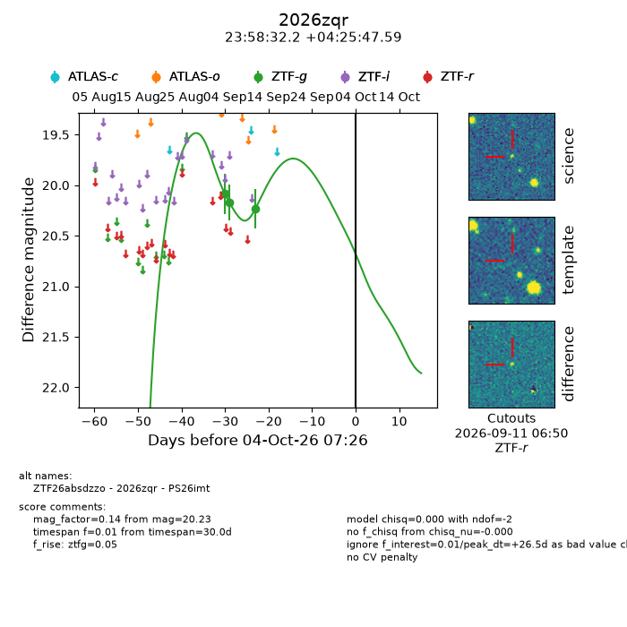
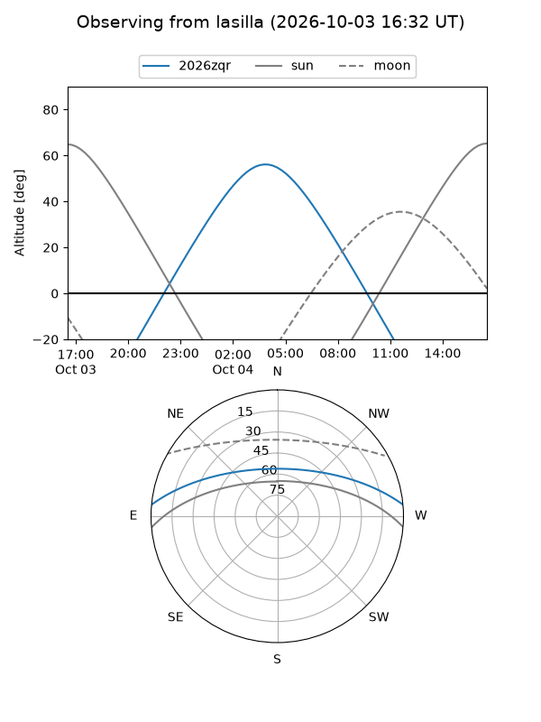
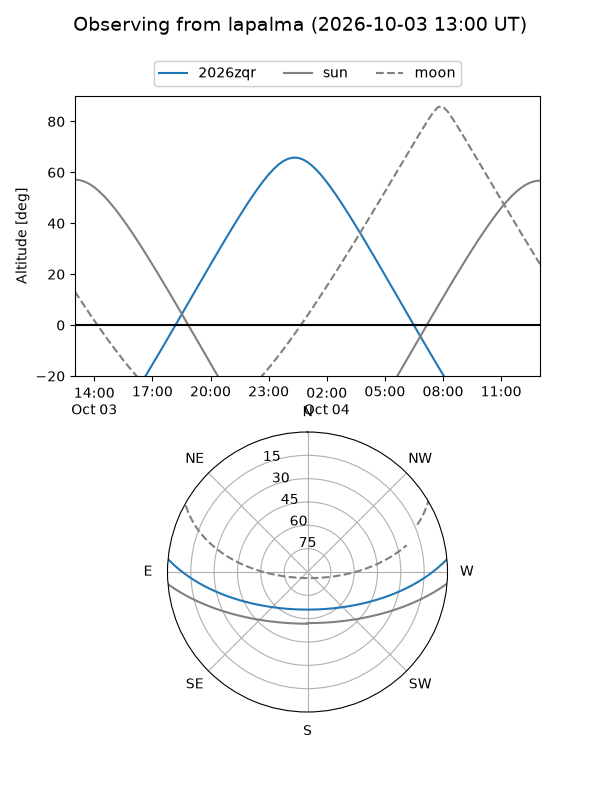
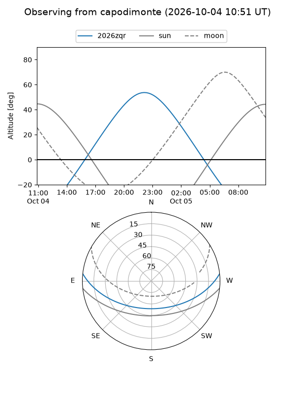
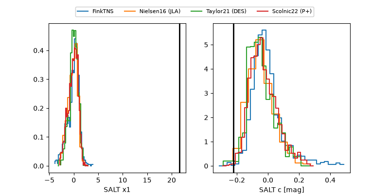

2026zqr
Target 2026zqr at 2026-10-04 07:28
Aliases and brokers:
FINK-ZTF: ztf.fink-portal.org/ZTF26absdzzo
Lasair-ZTF: lasair-ztf.lsst.ac.uk/objects/ZTF26absdzzo
ALeRCE-ZTF: alerce.online/object/ZTF26absdzzo
YSE-PZ: ziggy.ucolick.org/yse/transient_detail/2026zqr
TNS name: wis-tns.org/object/2026zqr
Direct TNS query: direct search
alt names
ZTF26absdzzo (ztf,fink_ztf)
2026zqr (tns,yse)
PS26imt (panstarrs)
Coordinates:
equatorial (ra, dec) = 359.6342,+4.42989
equatorial (HMS+DMS) = 23:58:32.21,+04:25:47.59
galactic (l, b) = (98.8900,-55.95272)
Flags:
TNS type: nan
peak dt: +26.5
Photometry:
last ztfg=20.23
3 ztfg detections
Lightcurve

Visibility



Additional plots
